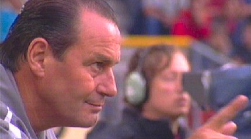
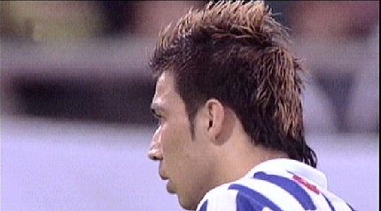

|
SC
Heerenveen - Roda JC (5-4) 20 augustus 2005
|
In het vernieuwde Heerenveenstadion is het oude gastenvak getransformeerd
tot sfeervak.
Nieuw Noord is de naam.
Het gastenvak ligt nu aan de andere zijde en heeft nu dus weer stoeltjes.
De Kirchroa-jekke hebben het Italiaans woordenboek erbij genomen.
Het stadion van SC Heerenveen blijft een primitief golfplatenbouwsel.
Een mooie diepte-pass van Senden bereikt Kone die de bal over doelman
Waterman in het doel probeert te koppen. De bal gaat net over.

Nadat Bodnar in het zijnet schiet in plaats van op de vrijstaande Sonko te
passen, maakt Huub duidelijk dat de Hongaar moet "kijken".
Sergio speelt op Sonko die zich mooi vrij loopt.
Sonko scoort 0-1 via de paal en de rug van de keeper, (15').
Schitterende rush van Arouna Kone die ruim een half voetbalveld oversteekt,
een verdediger afschudt, de keeper omspeelt en koelbloedig afrondt. Dit op
slag van rust: 0-2, (45').
De Afro-dansjes.
Ruim in blessuretijd krijgt Heerenveen een vrije trap. Vicelich informeert bij
scheidsrechter Koopman of het nog geen tijd is om af te fluiten.

Het zal de Hulk worst wezen....
Prachtige vrije trap van Yildirim: 1-2 (45').
Koopman krijgt forse kritiek van Huub Stevens en zijn collega's.
De tweede helft is amper bezig wanneer Senden zich knullig door
Samaras
laat uitspelen die vervolgens de gelijkmaker inschiet: 2-2, (50').
Diagonaal schot van Pranjic: 3-2, (54') !!!!
Huntelaar scoort uit de draai: 4-2, (57') !!!!!
Kujovic krijgt een bal niet goed onder controle waarna Huntelaar er meteen
bij is om het presentje te benutten: 5-2, (77').
Van Dijk benut een terecht gegeven penalty vanwege een handsbal van
Jeroen Drost: 5-3, (80').
Sergio kaatst met invaller Derksen en scoort 5-4, (82'). Einde van
een sensationele wedstrijd. Duur puntverlies
van Roda dat een
uitverkocht Heerenveenstadion een prettige ouverture van de competitie
bezorgde.
© Koempels Pleasure Dome
|